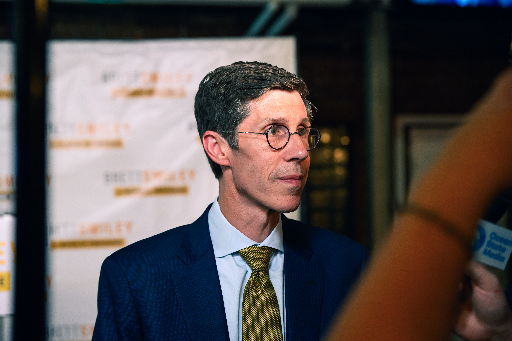

In photos: Two campaigns, one race for mayor
Inside last Wednesday’s Democratic primary for mayor of Providence
Reporting by
Photography by
Web design by
↓
Inside last Wednesday’s Democratic primary for mayor of Providence
Last Wednesday, over 27,000 people voted in the Democratic primary for mayor of Providence — over 14,000 for State Rep. David Morales MPA’19, and over 12,000 for Providence Mayor Brett Smiley. Results began rolling in just after 8:00 p.m., and within an hour, Smiley had been unseated.
Reporters and photographers from The Herald attended the two campaigns’ watch parties to document the end of the historic race.
Behind the bookstore Riffraff in Olneyville, a crowd of David Morales’s campaign supporters and volunteers gathered. Despite the rain, the energy was just as electric as the pop music playing over event speakers.

Media by Jake Parker
Attendee James Carr ’27 volunteered with both Morales’s mayoral and Miguel Youngs’s city council campaigns, a decision he described as motivated by a feeling that the Democratic Party’s base is changing, “moving away from corporate interests” and back to what he described as its history as a “working class workers’ party.”
Just like many voters in last week’s election, Carr considered the candidates’ housing policies important. As a Navy veteran, Carr receives support from the U.S. Department of Veteran Affairs but said that he still “had a really hard time finding an affordable apartment within walking distance” of Brown’s campus.
As the polls closed and vote count began, Narragansett Brewery in Fox Point — the epicenter of Providence Mayor Brett Smiley’s campaign for the night last Wednesday — buzzed with energy and anticipation. From college students to campaign volunteers and enthusiastic neighbors, supporters clad in Smiley merchandise chatted and milled about excitedly.
A projection of the vote count from WPRI-12 appeared on the wall. Even before the results began to trickle in, the crowd erupted in cheers. “I really, really love David’s energy,” campaign volunteer Christine Rivera told The Herald. “I love his beliefs. I really believe that he has his heart and soul.”

Media by Jake Parker
As event organizers put WPRI-12’s election coverage on the brewery’s main television, attendees began to glue their eyes to the screen.
One attendee, Oneyda Fernandez, told The Herald that this is “the second time around” she supported Smiley in the race for Providence mayor. “I believe that the job he did those first four years was phenomenal,” Fernandez said. “He met every goal.”
With around half of the vote in, WPRI-12 anchors announced that Morales held 56% of the votes. The crowd erupted in cheers, chanting “David” and embracing one another. Shortly after, Helena Foulkes was declared the winner of the Democratic gubernatorial nomination, and many in the crowd cheered for her victory.
Gregory Greco, a longtime progressive activist who previously ran for Rhode Island State Senate District 18 in 2022, explained that he was tired of the status quo. “We need a change. We need people looking out for us,” he said, adding that he looks for candidates who listen to the needs of the community and fight on their behalf.

Media by Jake Parker

Media by Jake Parker

Media by Jake Parker
With around half of the votes in, Morales held 56% of the count, and Smiley lagged at 44%. But Smiley enthusiasts did not waver in their support.
Trent Carney, another Smiley supporter, deemed him “the greatest mayor” during his time in Rhode Island.
“Mayor Smiley is outperforming every other leader in municipalities throughout the state,” Carney said.
Carney believes that the steps Smiley has taken to improve Providence’s housing crisis will have a positive impact on cost of living in Providence and increase the amount of people that are able to live in the city.
As mayor, Smiley has made efforts to protect tenants from unfair practices by providing funding for eviction defense resources and housing rights education. He has also prioritized the construction of new, permanently subsidized affordable housing units.
Solutions to the housing crisis “must center on building more housing,” Smiley previously told The Herald.
Throughout his term, Smiley has also pushed for Providence public schools to return to local control following a seven-year state takeover.
“I think, given the chance to run the Providence school system hands-on, he’ll do a great job,” Carney told The Herald. “I would be very happy to see four more years of Smiley.”
With more votes counted, Morales’s lead only grew. Still, fans of Smiley refused to let go of hope that their candidate could pull ahead and his supporters’ energy ran strong.
Less than 40 minutes after the polls closed, the Associated Press called the race for Morales. While the mood throughout Narragansett Brewery shifted noticeably, conversation continued as attendees awaited Smiley’s arrival.
AAs the anchors were discussing a different race, WPRI-12 declared Morales the Democratic nominee for mayor of Providence on a banner at the bottom of the screen. The information slowly dawned upon the crowd as some onlookers burst out in sporadic cheers. Soon after, the anchors called the race, and the audience was overtaken with a chorus of joyful jumping, screaming, dancing and hugging.

Media by Jake Parker

Media by Jake Parker

Media by Jake Parker

Media by Jake Parker
“I’m so pumped! I’m so excited!” Chloe Castaneda, a volunteer with Reclaim Rhode Island — a housing justice organization — told The Herald. “I’m really looking forward to more tenant protections,” Castaneda said, and “being able to make sure that the city doesn’t only belong to the landlords.”

Media by Jake Parker

Media by Jake Parker
A celebratory marching band began to perform. Attendees weren’t just celebrating Morales’s win, but also the success of progressive candidates across Providence. Miguel Youngs won the Democratic primary for the Ward 1 City Council position, beating incumbent John Goncalves ’13 MA’15.

Media by Jake Parker

Media by Jake Parker
Speeches began, emceed by Siraj Sindhu GS, executive director of Reclaim Rhode Island. “How do we feel about the future of our city?” he asked the crowd, to which audience members responded with an enormous cheer. “Yeah, I’m feeling pretty amazing right now.”
A slate of progressive advocates, including Youngs and the State Director of the Rhode Island Working Families Party Anusha Venkataraman, addressed the energetic crowd. Even when the microphone cut, the energy outside Riffraff remained high.

Media by Jake Parker

Media by Jake Parker

Media by Jake Parker
Smiley entered the brewery and was met with a sea of applause. He made his way through the crowd slowly, hugging and exchanging brief remarks with each attendee.
After a brief introduction by his campaign manager, Morales took the stage. The crowd had been buzzing with energy and noisy side conversations throughout many of the previous speeches, but this time the room fell almost nearly silent.

Media by Jake Parker
“Hi neighbors,” Morales began.
Morales thanked Smiley for his concession and service to Providence, then turned to thank Morales campaign volunteers for their efforts. “People had every reason to give up on politics around our city, but our neighbors tonight chose to believe,” he said.
He also made sure to shout out his mother, who immigrated to the United States to seek a better future for her children, as well as “the next first lady of Providence,” with whom he co-parents his 19-pound cat Mochi.
As some neighbors peered down from their windows overlooking the space, Morales emphasized his commitment to fight for working people and the importance of coalition-building in politics.

Media by Jake Parker
Morales concluded his victory speech with a call to action. “So, neighbors, with the bold agenda and the mandate that we have voted for, let’s get ready. Providence, let’s get ready. Because over the next four years, we are going to build a” — joined by a chorus of all the attendees — “Providence for all!”

Media by Jake Parker

Media by Jake Parker
After speaking with the crowd, Smiley and his team finally took the stage.
“Tonight, the voters of Providence made their choice,” Smiley began, “and they chose David Morales as our next mayor in the Democratic primary.”
“While I’m not happy with that outcome, I’m so happy and proud of the campaign that we ran,” he continued.
The mayor thanked his campaign staff, friends and the politicians who supported his campaign for a second term. He went on to thank his husband, Jim DeRentis, whom he named “the best supporter” he “could ever ask for.”
“Now, my time as mayor will come to an end in a couple of months,” Smiley remarked, “but there is still important work to be done.”
“Providence must continue to confront the housing crisis, and we need to keep building our way out of it,” Smiley said, referencing his long-term advocacy for construction of new affordable housing units. “We need to continue to improve outcomes for our students, and I hope the next mayor focuses relentlessly on improving outcomes for our kids at Providence Public Schools.”
“Thank you for believing in me. Thank you for believing in our work, and thank you for believing in the city of Providence,” Smiley said.
He shared that he called Morales once the final results came in and “congratulated him on his success.”
“This is a really difficult evening, but tomorrow morning, most of us will go back to work,” he continued. “We’ll go back to City Hall, and we will finish the job that we started.”
“Serving as your mayor has been an honor,” Smiley said.

Media by Jake Parker
Media by Horatio Hamilton